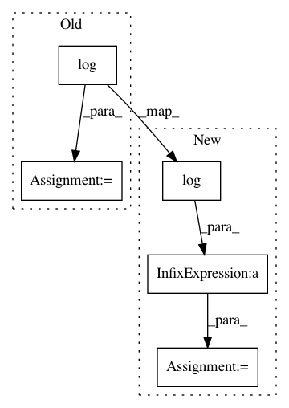

641621bc7cf7a8140642bd068040cf1b397f2205,theanolm/commands/score.py,,_score_text,#,78
Before Change
perplexity = numpy.exp(cross_entropy)
output_file.write("Cross entropy (base e): {0}\n".format(cross_entropy))
if not log_base is None:
cross_entropy /= numpy.log(log_base)
output_file.write("Cross entropy (base {1}): {0}\n".format(
cross_entropy, log_base))
output_file.write("Perplexity: {0}\n".format(perplexity))
After Change
validation_iter = theanolm.BatchIterator(input_file, dictionary)
base_conversion = 1 if log_base is None else numpy.log(log_base)
total_logprob = 0
num_words = 0
num_sentences = 0
for word_ids, membership_probs, mask in validation_iter:
logprobs = scorer.score_batch(word_ids, membership_probs, mask)
for seq_index, seq_logprobs in enumerate(logprobs):
seq_logprob = sum(seq_logprobs)
seq_length = len(seq_logprobs)
total_logprob += seq_logprob
num_words += seq_length
num_sentences += 1
if not word_level:
continue
seq_word_ids = word_ids[:, seq_index]
seq_logprobs = [x / base_conversion for x in seq_logprobs]
seq_logprob /= base_conversion
seq_details = [str(word_id) + ":" + str(logprob)
for word_id, logprob in zip(seq_word_ids, seq_logprobs)]
output_file.write("// Sentence {0}\n".format(num_sentences))
In pattern: SUPERPATTERN
Frequency: 3
Non-data size: 5
Instances
Project Name: senarvi/theanolm
Commit Name: 641621bc7cf7a8140642bd068040cf1b397f2205
Time: 2015-11-25
Author: seppo.git@marjaniemi.com
File Name: theanolm/commands/score.py
Class Name:
Method Name: _score_text
Project Name: mahyarnajibi/SNIPER
Commit Name: 72caa3677f5f9cc09ed98324c76454c38a7e8098
Time: 2018-06-04
Author: mahyarnajibi@gmail.com
File Name: lib/metric.py
Class Name: MaskLogLossMetric
Method Name: update
Project Name: senarvi/theanolm
Commit Name: be44976b8ea94ca38942370935c360fd22d7871b
Time: 2015-11-25
Author: seppo.git@marjaniemi.com
File Name: theanolm/commands/score.py
Class Name:
Method Name: _score_text